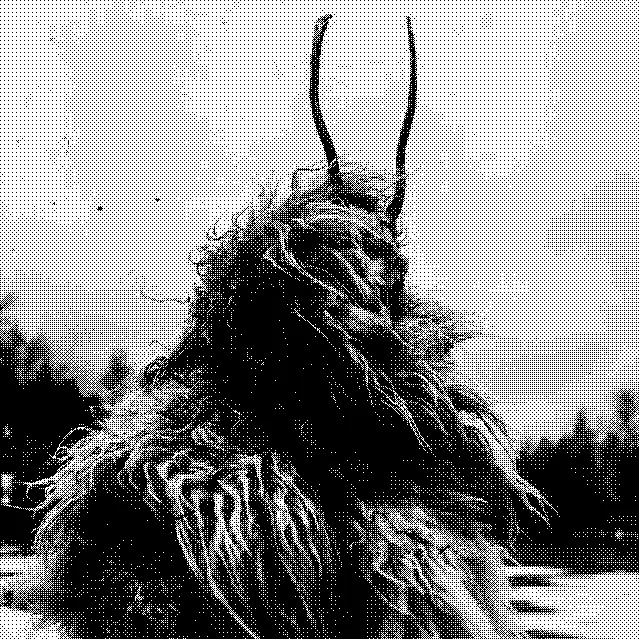

Неизлечимое одиночество
Памятью необходимо пользоваться правильно. Склонность к жизни в памяти так же вредна, как и жизнь в будущем. В прошлом, я был так же одинок как и сейчас, однако, кажется будто это не так. Я помню как я больше общался с миром в молодости, однако, это общение было не что иное как постоянная борьба за внимание. Внимание это любовь, а любовь это внимание. Как только ты перестаешь бороться - ты исчезаешь, растворяешься.
Есть предположение, что через любовь к внешнему миру можно получить и внимание и любовь, но легенда о Данко рассказала нам другую историю.
Ограничившись узким кругом надежных людей я перестал стараться быть замеченным. Я могу себе позволить редкую роскошь быть самим собой и это прекрасно. Потребность в самовыражении частично закрывается искусством и мыслями. Но конечно же, чего-то нехватает.